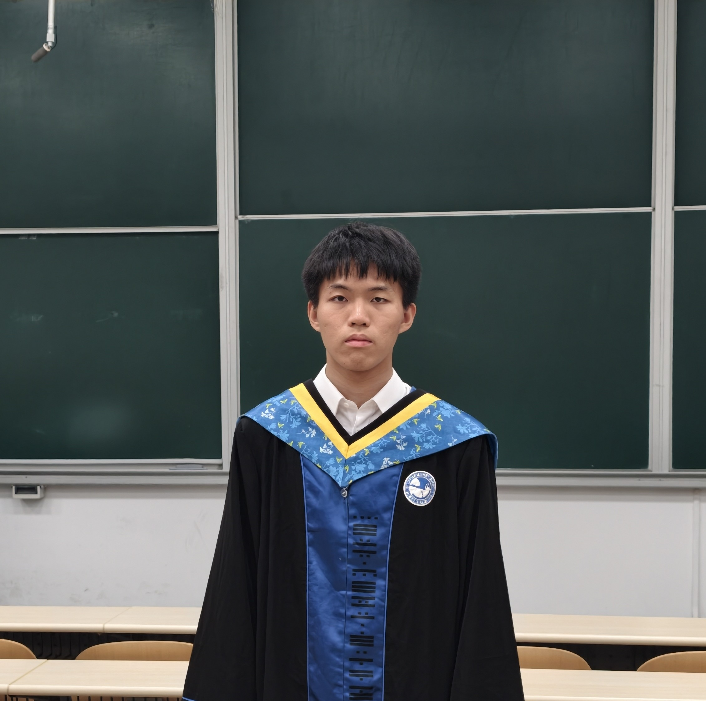

Zecheng Zuo
I am a first-year Master student at the School of Software, Beijing University of Aeronautics and Astronautics, advised by Prof. Tianyu Wo. My research interests include distributed system and efficient LLM training and inference. I received my bachelor's degree from Beijing University of Posts and Telecommunications, where I participated in a joint program with Queen Mary University of London. Previously, I worked at the AI Lab at Qifu Technology, where I focused on the LLM evaluation.

Publications
Publication list will be updated soon.
Award
National Scholarship, 2024
First-Class Scholarship, BUPT, 2025